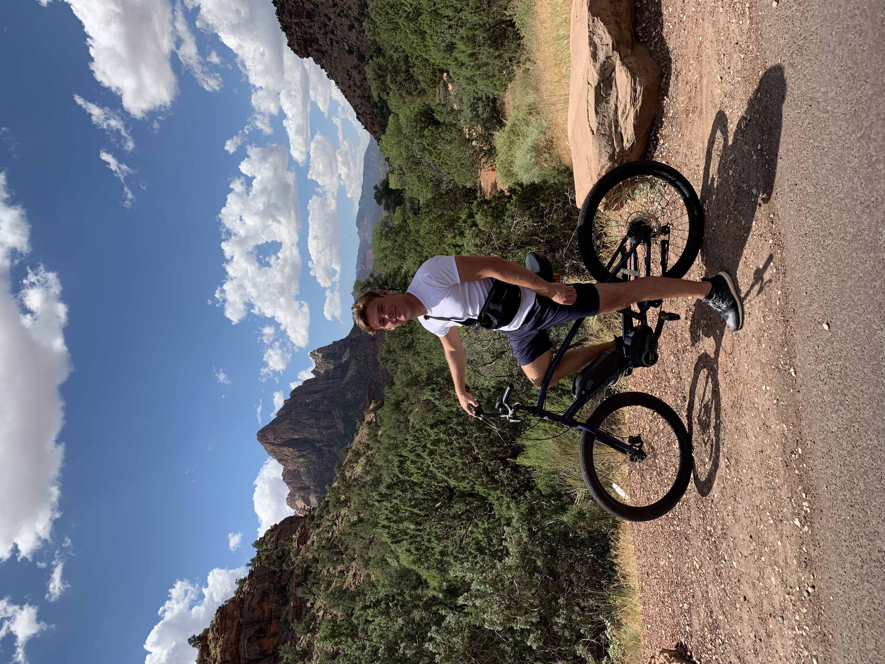
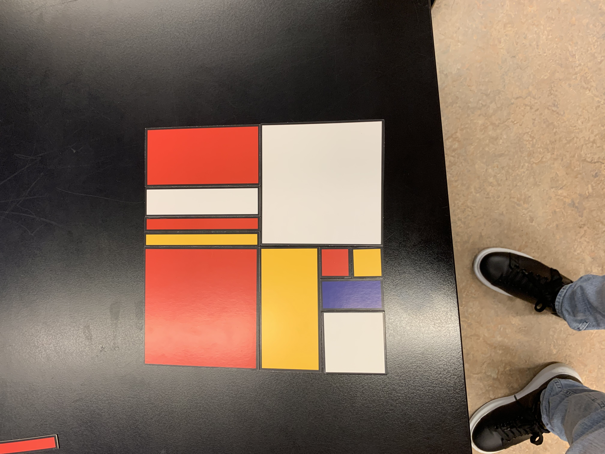

Jasper van Leeuwen
Wat heb ik geleerd?
Actiepunten
 Tijdens het keuzevak HTML en CSS heb ik geleerd hoe ik mijn ideeën en ontwerpen kan realiseren in de vorm van een website. Dit is vaak een concept, maar het heeft ervoor gezorgd dat ik een basis gecreeërd heb om een eigen complete website te kunnen maken. Ook om het samen met andere leerlingen te maken was leerzaam. De een heeft meer ervaring met HTML en CSS dan de ander, en zo kun je van elkaar leren.
Hi! Ik ben Jasper, 20 jaar oud en studeer op het moment aan de Hogeschool Rotterdam. Ik volg hier de opleiding Communicatie en zit in mijn eerste jaar. In mijn vrije tijd maak ik graag beats en ben ik zo nu en dan te vinden in de sportschool.
Ik beheers HTML/CSS nog niet zoals ik zou willen. Hier zijn nog heel wat leermomenten voor nodig, maar vooral belangrijk is het blijven oefenen ermee, ze zeggen ook wel eens “Oefen baart kunst”.
1. Blijven oefen met HTML en CSS
2. Verschillende websites bekijken en inspecteren
3. Uitleg video’s bekijken op kanalen als YouTube.
Uiteindelijk zou ik mijn eigen website willen maken, zodat ik mijn eigen beats hierop kan verkopen.
Dit zou de perfecte uitdaging zijn voor mij om te kijken hoe goed ik HTML en CSS beheers.